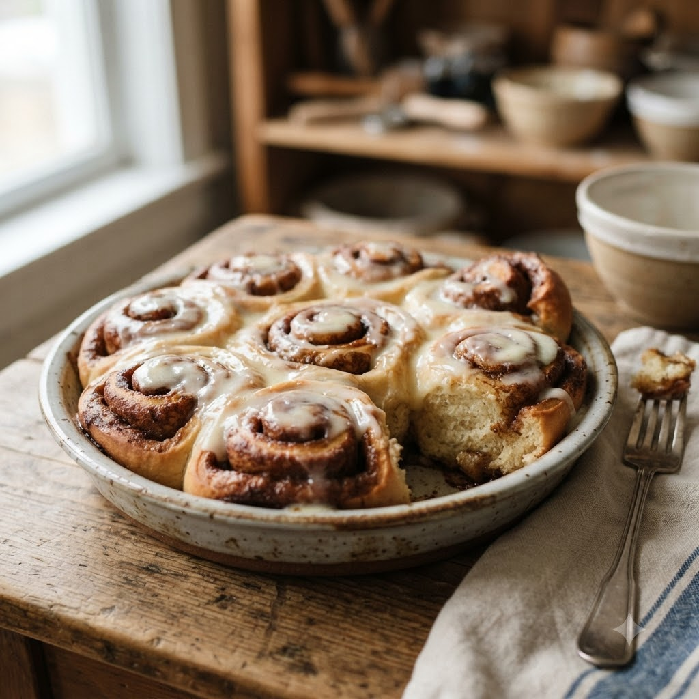

Quick Cinnamon Rolls

Quick Cinnamon Rolls
Airfryer – Bake 160°C 9 min makes 6
🔥 Airfryer
Ingredients
- 1 tube (6-piece) refrigerated cinnamon (dalchini) roll dough with icing
- (or use the dinner roll dough recipe and add cinnamon (dalchini)-sugar filling)
Method
1Preheat: Preheat the Airfryer to 160°C for 4 minutes before adding the food to the basket.
2Separate cinnamon rolls and arrange in a single layer in a greased pan that fits the basket, leaving space to expand.
3Bake at 160°C for 9 minutes until puffed and golden, checking from 7 minutes.
4Cool for 2 minutes, then top with the included icing before serving.